Neet had learned two things about the annual Neighborhood Dog Games: there would be ribbons, and none of them had his name on them yet.
He considered this a temporary arrangement.
“Listen up, team,” Neet barked, pacing in front of his gang under the banyan tree. His Dorito-shaped ears twitched with excitement. “This is our chance to prove we’re not just protectors of the neighborhood. We’re champions. We’re legends.”
Shadow wagged his tail. “What’s the plan, boss?”
“Simple.” Neet hopped onto his command post. “We enter every event, dominate the competition, and take home all the ribbons. Buddy, you’re with me for the obstacle course. Shadow, you’ll handle the long jump. Chikki, you’re on fetch duty. Everyone else, be ready for backup.”
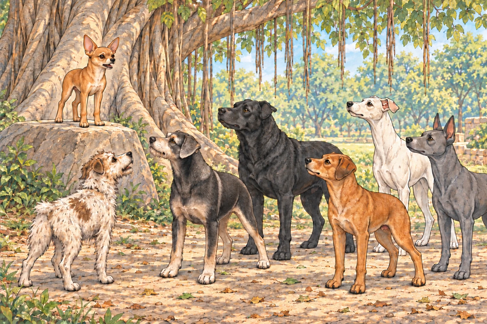
Buddy looked toward the park. “Obstacle course?” He would rather have watched from the shade, but he also wanted to finish something without Neet having to explain it for him. “You know I’m not exactly… agile.”
“Don’t worry, Buddy. Just follow my lead. You’ll be fine.”
“Your lead usually goes under something.”
“Excellent preparation for the tunnel.”
Chikki put a paw on Buddy’s stick. He put his other paw on it. They had played this game before, and Buddy was quite good at it.
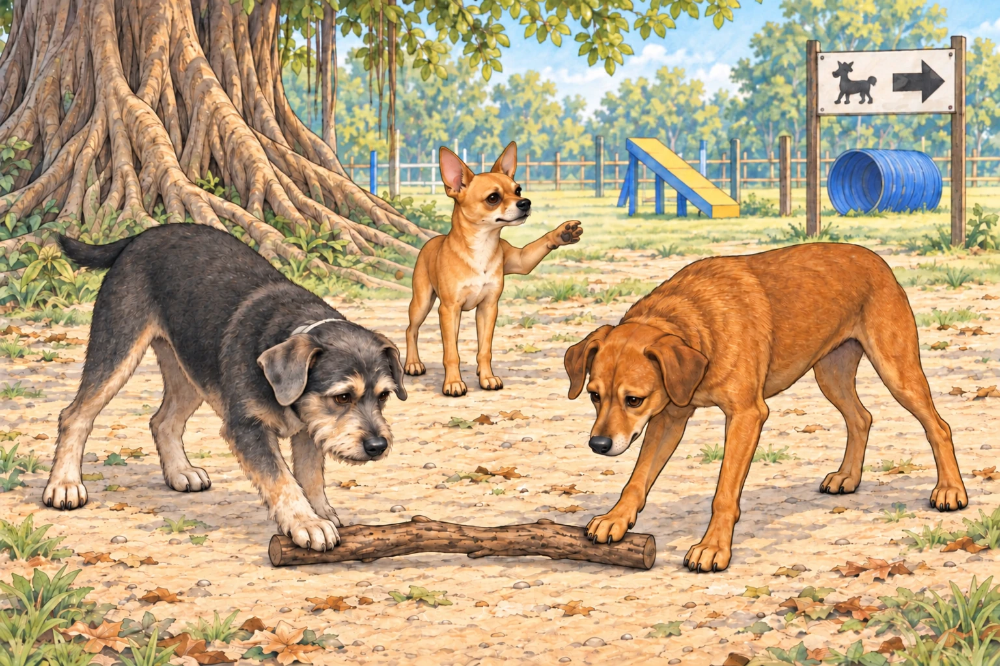
“Why don’t we enter this?” he asked.
“That’s the last event,” Shadow said.
Buddy looked down at the stick. A whole day before the part he understood. He let Chikki take it, then followed Neet toward the park to inspect the part he didn’t.
Through the fence, he could see a low beam. Beyond it stood a tunnel with a dark mouth. Buddy studied the beam, walked carefully alongside the fence and arrived opposite its far end.
“There,” he said. “Finished.”
Neet stared at him.
“That was on the ground.”
“Very good ground.”
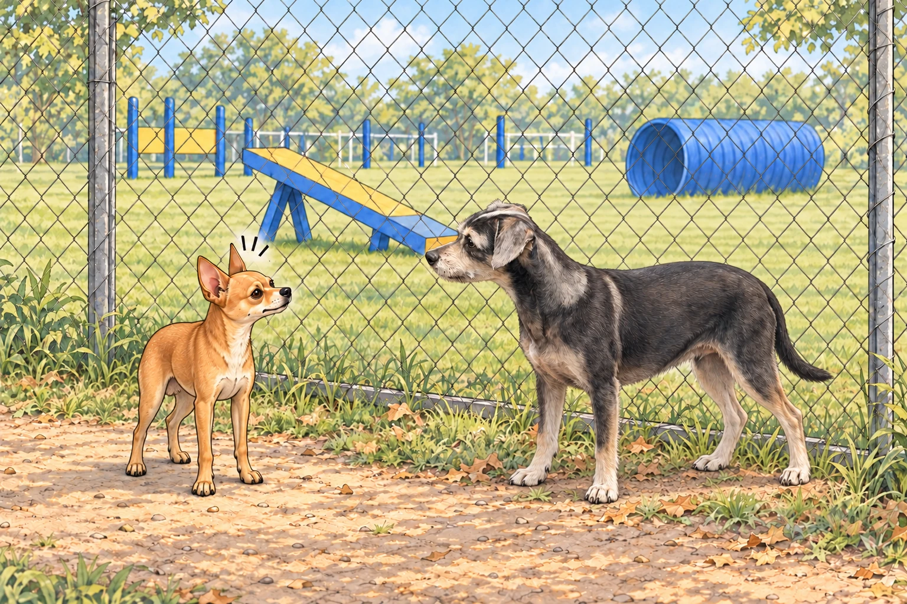
Neet started to describe the route again. Buddy looked back at the beam. He would have to try the actual thing tomorrow. The ground had felt magnificent, but nobody was likely to put a ribbon on it.
When the day of the games arrived, the neighborhood park was buzzing with excitement. Colorful banners flapped in the breeze, and tables were lined with bowls of water and dog treats. Heather had dressed Neet and Buddy in matching bandanas, much to Neet’s delight and Buddy’s embarrassment. Neet lifted his chin so everyone could see his. Buddy lowered his, hoping the knot might pass for a very small towel.
Heather straightened both bandanas. “There. Now try to bring them home the same color.”
Buddy glanced at a water bowl on the grass. An event he understood.
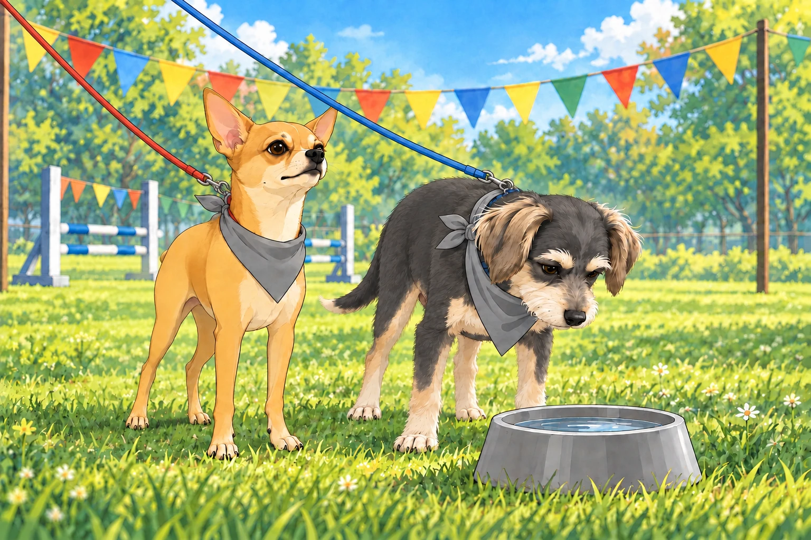
At the course entrance, Heather unclipped their leads and folded them over her wrist. She walked alongside the marked route while the dogs joined the starting line. Buddy kept her in view. Neet kept the ribbon table in view.
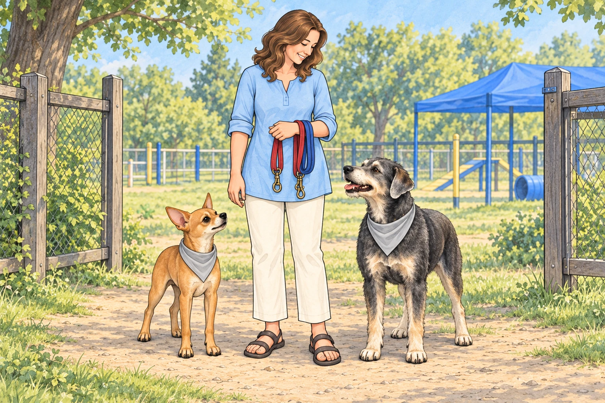
A volunteer explained that both dogs had to cross the finish before their pair was done. Neet missed most of this because another volunteer lifted a ribbon from the table.
Buddy listened very carefully.
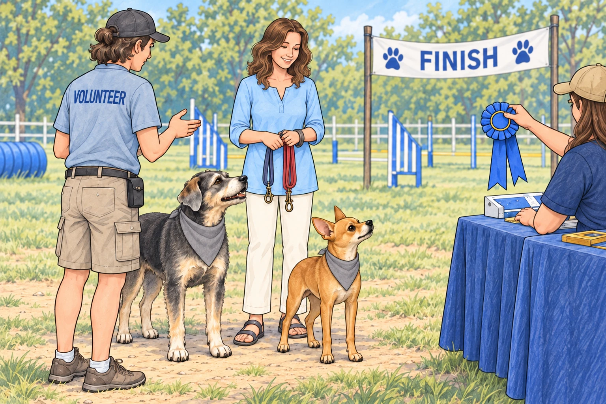
The first event had hurdles, tunnels, balance beams and a shallow pool of water to cross. The near edge of the pool looked innocent. The far edge looked much more appealing.
“Ready, Buddy?” Neet asked.
“As ready as I’ll ever be.”
The whistle blew, and they were off. Neet sprinted ahead, clearing the hurdles with ease. Buddy followed, hopping awkwardly over each one. After the second, his paws landed almost where he had intended. He attempted the third with rather too much confidence and came down in a scramble.
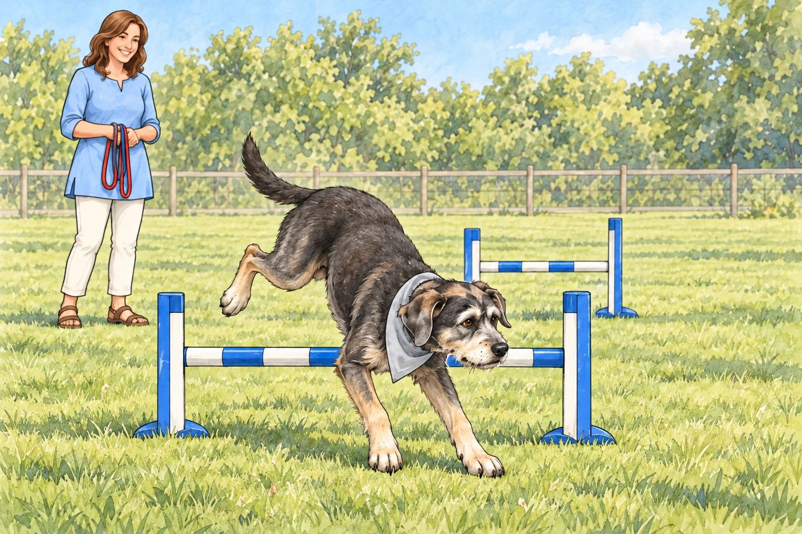
He straightened himself and carried on. Heather was smiling beside the course. She hadn’t moved toward him.
At the tunnel, Neet darted through like a bullet. Buddy stopped at its mouth. There was daylight inside, but it was all the way at the wrong end.
“Come on, Buddy!” Neet barked. “No time for second thoughts!”
“I’m still using the first one.”
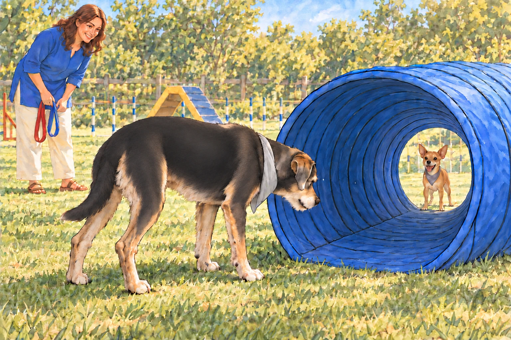
He lowered his head and stepped inside. Neet’s voice became enormous in the tunnel. Buddy stopped again.
“Buddy!”
“Yes. There are several of you in here.”
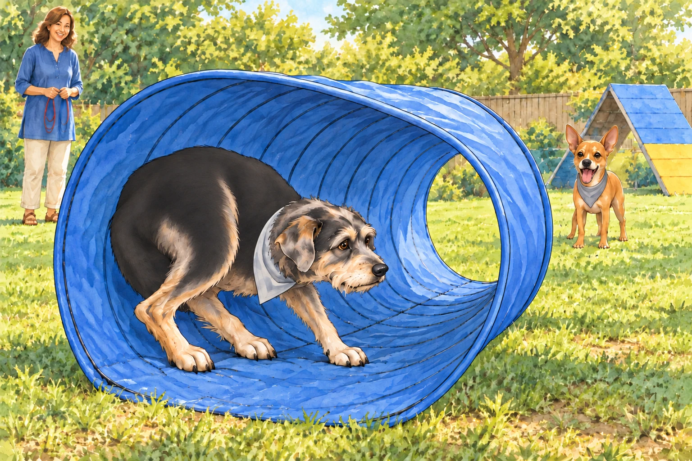
Neet backed away from the exit. The tunnel grew quiet. Buddy fixed his eyes on the daylight, crouched and wriggled through. He emerged with dirt on his nose and considerable interest in never seeing a tunnel again.
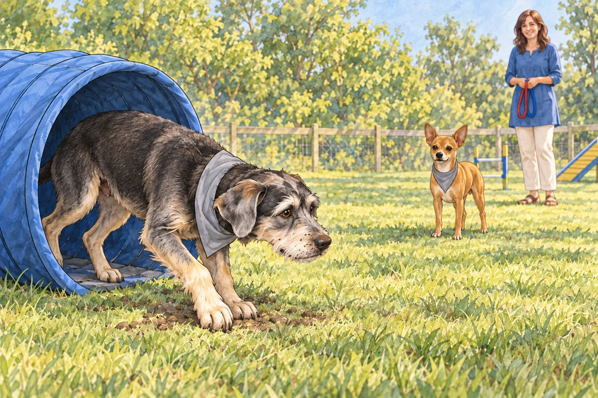
Neet was already across the low balance beam.
Buddy glanced at the excellent ground beside it. Then he placed one paw on the beam, brought the others up and started forward.
“Faster!” Neet urged.
Buddy stopped moving altogether.
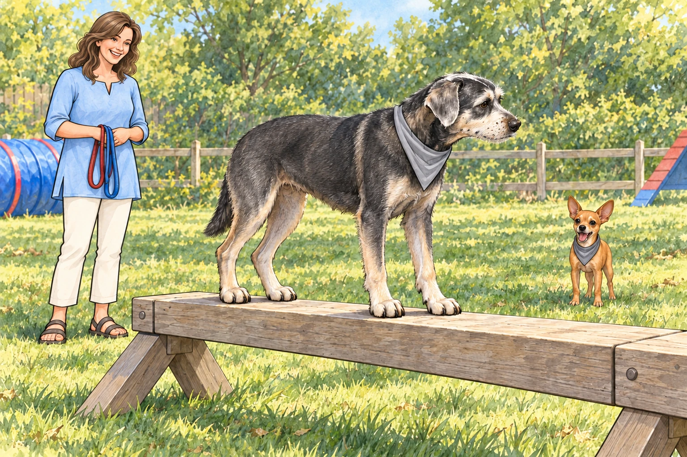
Neet shut his mouth. Buddy took another step. For the rest of the beam, Neet encouraged him silently, with considerable effort.
Halfway across, Buddy looked toward Heather. She had stopped walking too. Her hands stayed loose around the folded leads.
“One at a time, sweetheart.”
Buddy put down the next paw. Then the next. Neet’s mouth opened at the far end and closed again without making a sound.
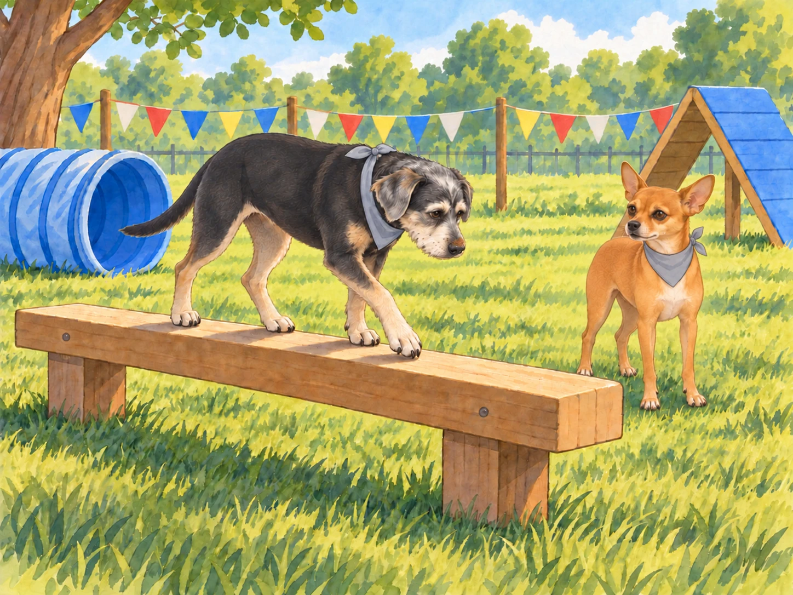
Buddy reached him.
When they reached the pool, Buddy froze. “Water? Really?”
Neet leapt in and paddled across. “It’s shorter than the tunnel!” he called back.
Buddy studied the distance. He had already done the tunnel. He put one paw into the water, withdrew it and looked at the wet patch it left on the ground.
The paw remained attached. Encouraging.
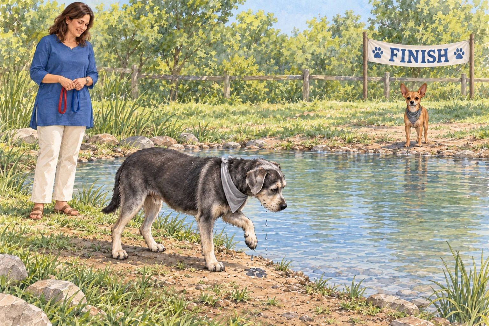
He stepped in. Water reached his chest, and he began to splash his way across. Neet stood beyond the pool, shifting from paw to paw. The finish was behind him. He looked at it, then at Buddy.
For once, he waited without being asked.
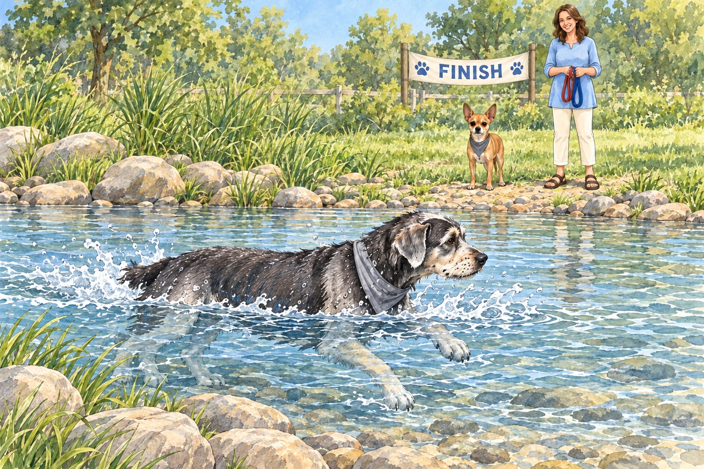
They crossed together, Neet strutting proudly and Buddy panting heavily. Buddy gave one enormous shake.
Neet shut his eyes. Heather looked at the two darkened bandanas and said, “Well. They still match.”
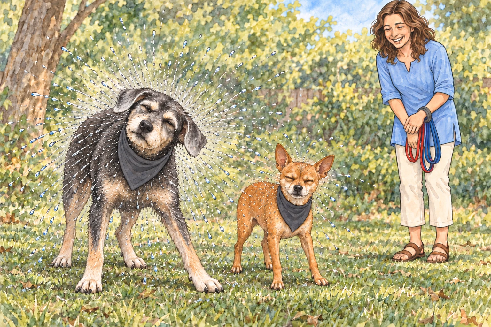
“You did great out there,” Neet said, giving Buddy a friendly nudge. “Told you you could handle it.”
Buddy looked back at the beam. A different pair was crossing now. One dog had stopped, and the other was barking at him.
“Yes,” Buddy said. “Eventually.”
The next event was the long jump, and Shadow took center stage. Neet trotted toward the takeoff line to give him final instructions. A volunteer gently guided Neet behind the spectator line.
Shadow stretched his forelegs. Neet leaned forward.
“Build speed, then—”
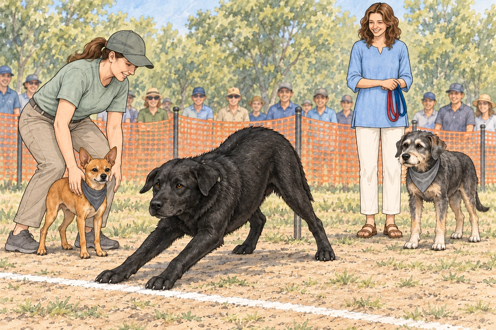
Shadow was already running.
“Show them how it’s done, Shadow!”
He leapt gracefully and landed farther than any other dog had that day.
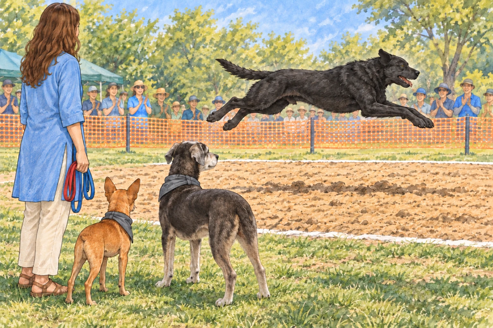
The crowd erupted in applause. Shadow shook sand from his paws, clearly proud of his performance.
Neet took a step toward the landing mark. Shadow looked at him.
“Just checking,” Neet said, and stepped back. He had cleared several hurdles. There was no need to become specific about distances.
The volunteer brought Shadow his ribbon. Neet lifted his chin as the ribbon passed him, then lowered it when it kept going.
Shadow let him sniff it.
“Definitely ours,” Neet said.
“Definitely mine,” Shadow replied, and rested beside Buddy.
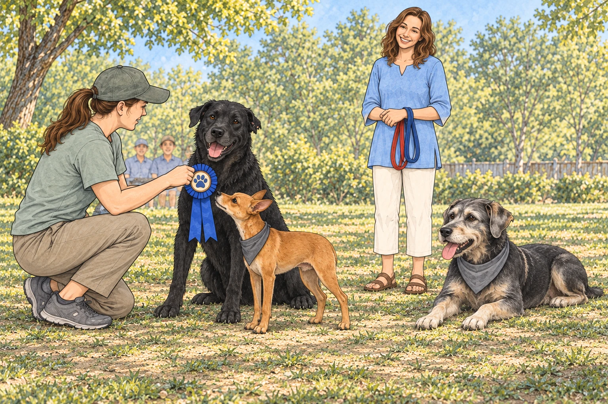
Meanwhile, Chikki dominated the fetch competition. She zipped across the field like a rocket, returning tennis balls faster than the competition could blink. Heather cheered as Chikki brought back ball after ball.
Buddy leaned forward whenever one flew. By the third throw, he was on his feet.
“You have a job already,” Neet reminded him.
“Watching.”
He moved one paw over the spectator line. Heather gently moved him back. He sat very close to the line.
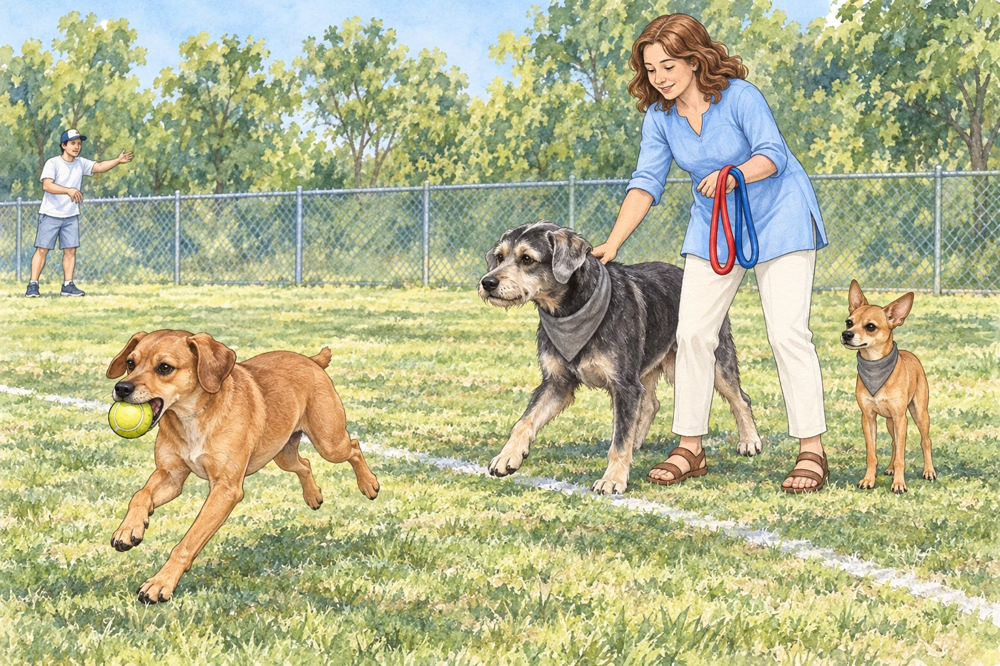
The next ball bounced toward their side of the field. Buddy sprang up. For a glorious instant it was coming directly to him, and there was nothing in the world more sensible than catching it.
He caught it.
Chikki skidded to a halt in front of him.
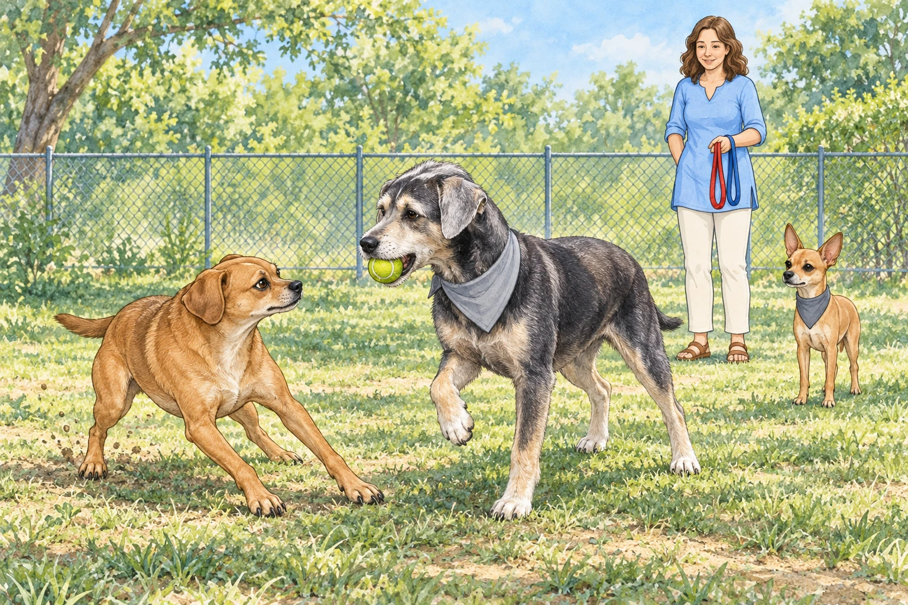
Buddy held perfectly still. The ball fitted his mouth beautifully. Chikki’s expression fitted the situation much less comfortably.
“Buddy.”
He dropped it. Chikki scooped it up and raced back to the thrower. The volunteer allowed the throw again, and Heather brought Buddy farther from the line.
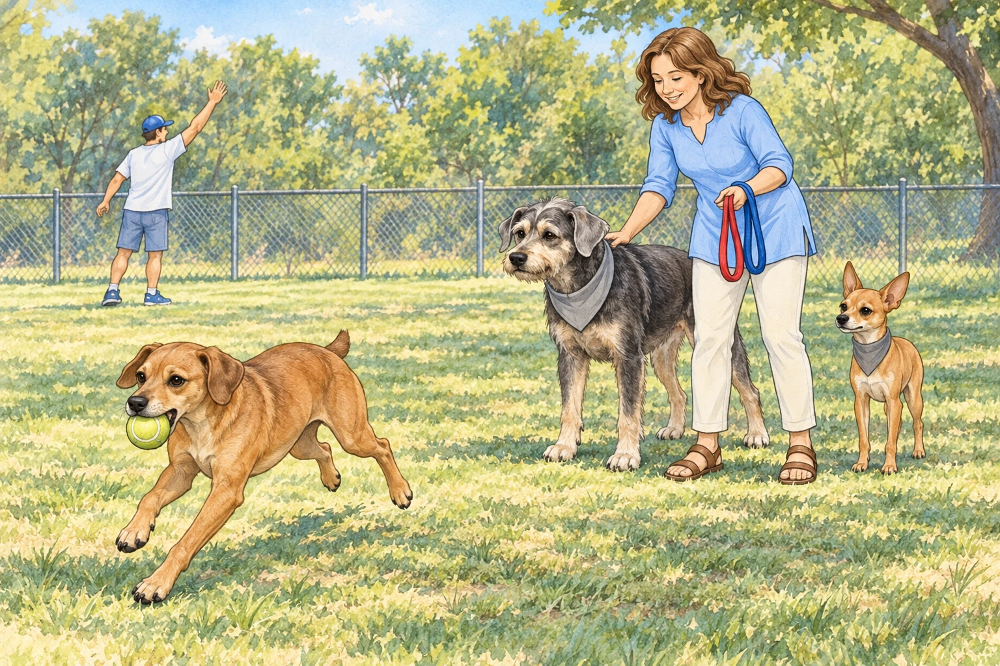
“You’ve had your turn, sweetheart. Let her have hers.”
Buddy sat beside Shadow. From there, the ball looked smaller. This helped very slightly.
Neet came over to issue a warning. Buddy was already lying down, his forepaws stretched in front of him.
“I know.”
Chikki returned after winning her ribbon. Buddy rose to sniff noses with her.
“Good catch,” she said.
“Wrong catch,” Buddy admitted.
She bumped his shoulder. “You can help pull next.”
He followed her toward the tug rope. At last, an invitation to keep something in his mouth.
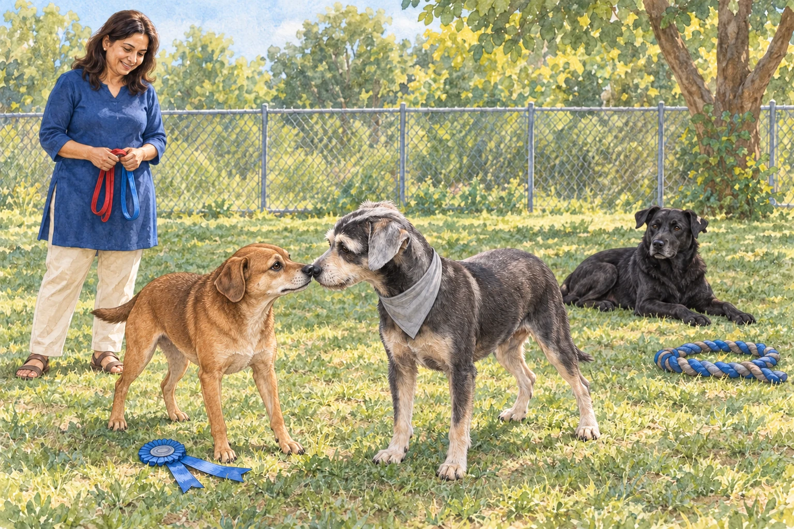
The final event was the tug-of-war. Neet and his gang faced a team of burly Labradors who looked as though they’d been training for months. Buddy took his place beside Chikki. Shadow anchored the back; Neet stood nearer the middle, where everyone could receive instructions.
The whistle blew. Buddy seized the rope and hauled backward at once. The other dogs were still finding their grips. The rope jerked; Chikki had to step sideways, and Buddy’s triumphant first pull became a short trip toward the Labradors.
He dug in his paws. This was considerably harder than the stick.
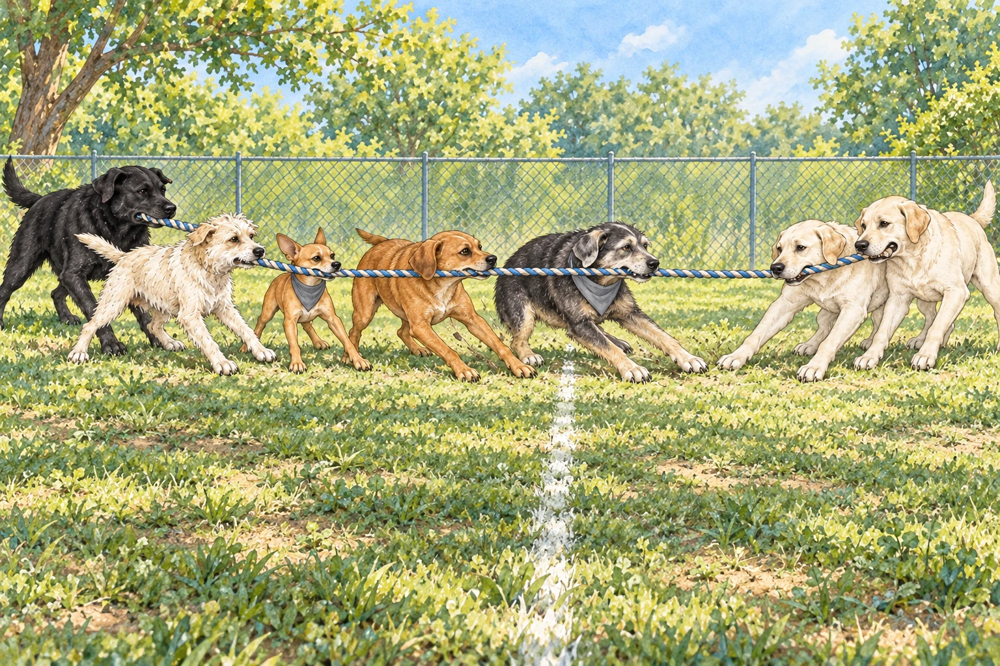
Neet tried to bark commands around the rope.
“Mmff! Mmm!”
Buddy tightened his grip. At last, instructions he could follow without discussion.
Then Neet opened his mouth to clarify.
The rope slid away from him. The gang lost another step before he caught it again.
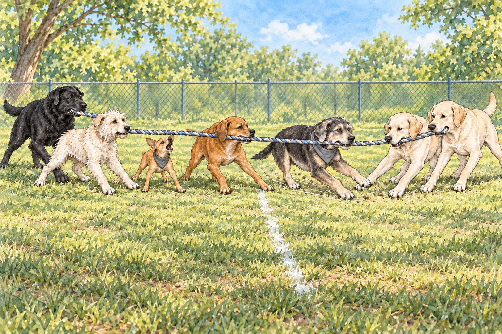
Across the line, a Labrador’s ears bounced with every steady pull. Buddy watched him, breathing hard through his nose. Trying to win all at once hadn’t worked. He planted his paws and held while Shadow shifted backward. Chikki followed. Buddy moved with her.
The rope stopped dragging them forward.
Neet looked down the line. Buddy was waiting, paws firm, until Shadow leaned back again. Then Buddy pulled. This time Chikki didn’t have to recover her feet.
Neet braced himself. His ears gave a sharp little twitch toward Shadow. He kept his teeth shut.
The gang found their rhythm. The scrappy terrier stopped hopping and settled into the pull. Their paws scraped backward together, and the rope came with them.
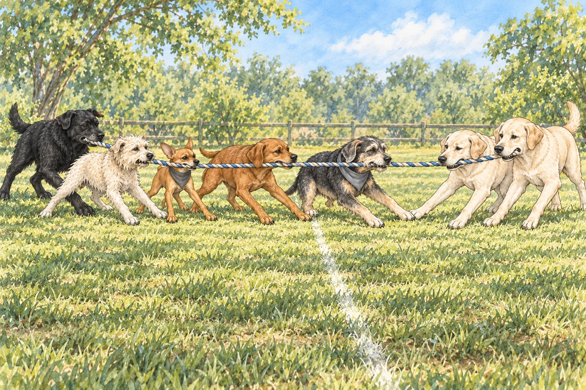
The Labradors held. Buddy’s jaws ached. He remembered the beam: one more step, with nobody shouting about the step after it.
Shadow leaned. Chikki leaned. Buddy pulled with them, and Neet threw his whole determined little body into the same movement.
With a mighty heave, the gang sent the Labradors stumbling forward. The whistle sounded, and the crowd roared.
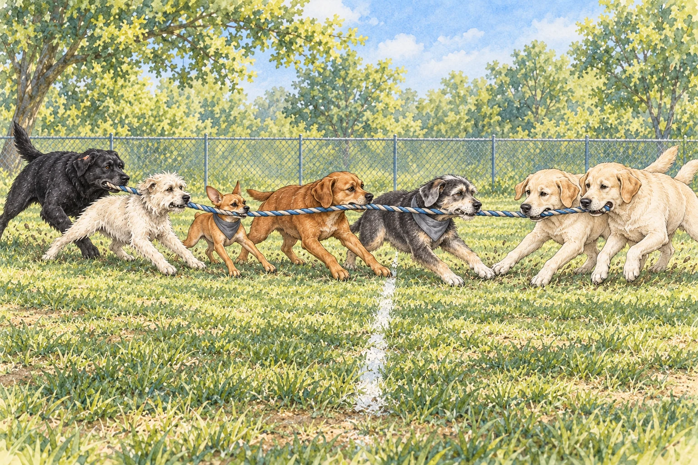
Neet released the rope and began to explain the winning maneuver. Buddy was still holding it.
“We won,” Neet told him.
Buddy waited until the Labradors had definitely let go. He had worked too hard to lose during the explanation.
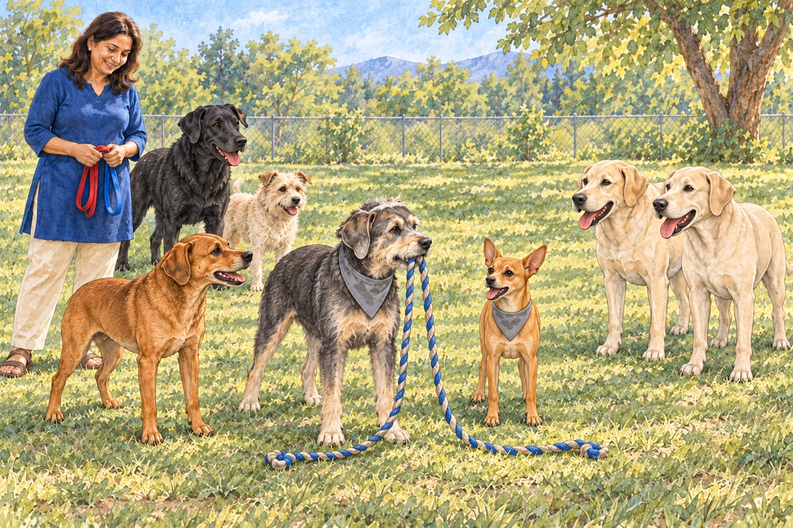
Then he dropped it. Chikki nudged him, and he nudged her back. Across the line, one of the Labradors shook out his shoulders and came over to sniff them. Buddy greeted him without checking the rope first.
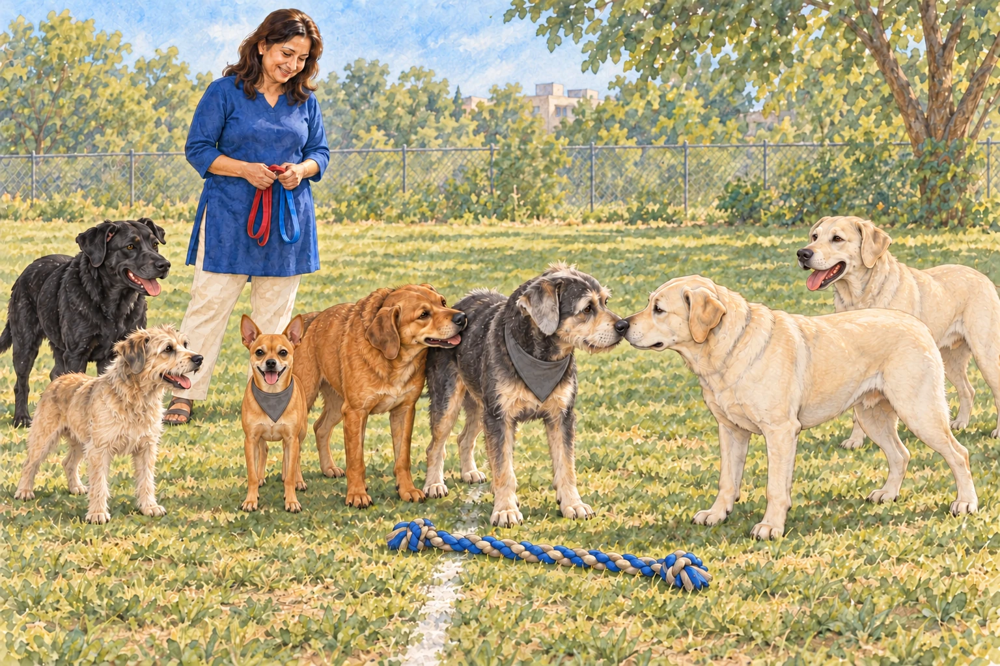
By the end of the day, the gang had collected ribbons in nearly every event. Heather knelt beside Neet and Buddy, holding up their awards.
“You guys were amazing,” she said, scratching Neet behind the ears. “The whole neighborhood is talking about you.”
Neet puffed out his chest. “Of course they are. We’re the best.”
Buddy flopped onto the grass with a tired but happy sigh.
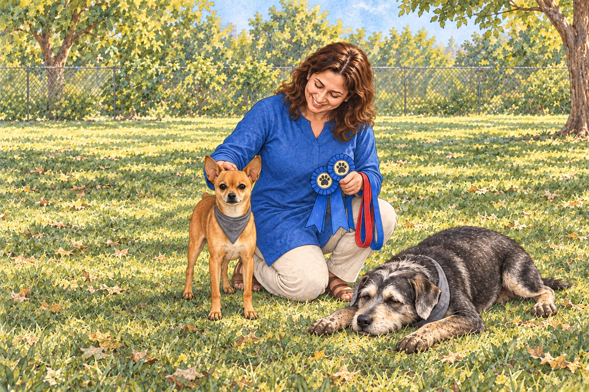
“Can we go home now?”
“Alright,” Heather laughed. “Let’s get you two some rest. You’ve earned it.”
On the way back to the banyan tree, Neet kept looking at their ribbons. Buddy kept looking for the first patch of shade. When he found it, he lay down with his muddy paws stretched neatly in front of him. He had finished. Heather set their ribbons on the grass beside him.
Shadow settled nearby. Chikki found Buddy’s stick among the roots and put one end between his paws.
Buddy looked at it.
“Tomorrow?”
She lay down with her paw on the other end. The stick stayed exactly where it was.
Neet stood beside them, opening his mouth to discuss next year’s training. Buddy closed his eyes.
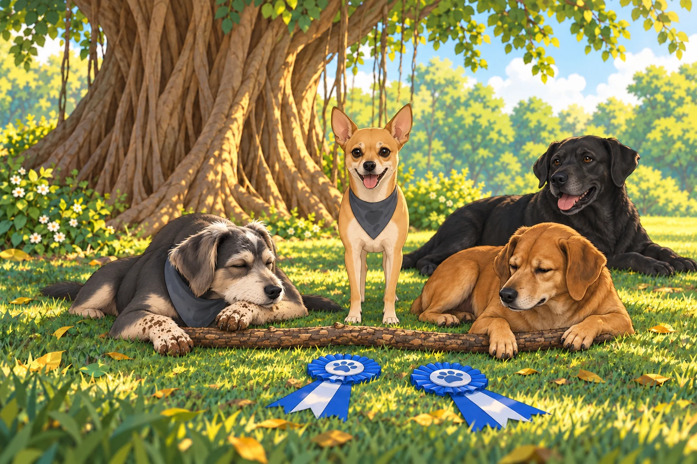
After a moment, Neet lay down too. The ribbons could remain undefeated until morning.
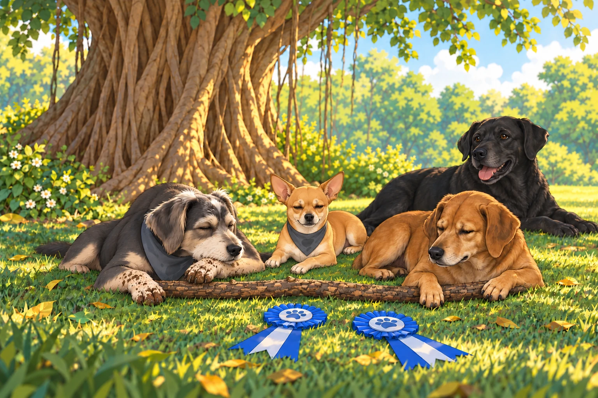